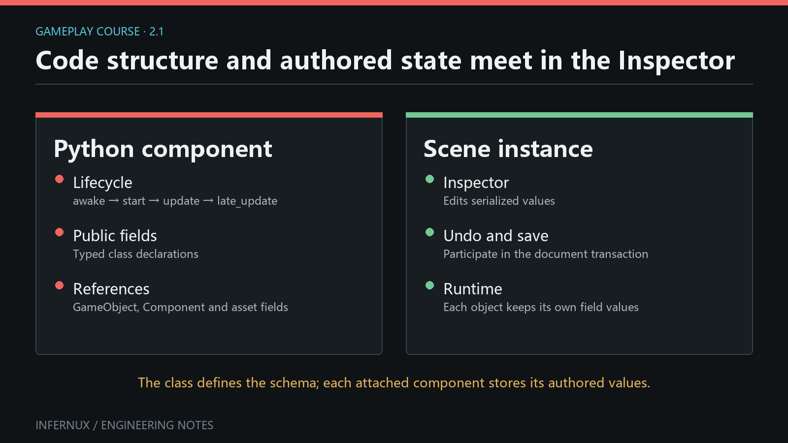

Gameplay Scripting · Chapter 2
GameObjects, components, and authored fields
The first component ran with values fixed in code. This chapter turns those values into scene-authored data, connects objects through Inspector references, and declares which component combinations are valid.

Build the component
Create TargetReporter.py under Assets and use this complete script:
from typing import Annotated
import infernux as inx
@inx.disallow_multiple
@inx.require_component(inx.Rigidbody)
class TargetReporter(inx.InxComponent):
speed: Annotated[
float,
inx.components.Header("Movement"),
inx.components.Range(0.0, 12.0),
inx.components.Tooltip("Maximum movement speed in units per second."),
] = 3.0
target: Annotated[
inx.GameObject,
inx.components.Header("References"),
inx.components.RequiredComponent("MeshRenderer"),
inx.components.Tooltip("Target must have a MeshRenderer."),
]
body: inx.Rigidbody = inx.component_field(
component_type="Rigidbody",
tooltip="Rigidbody used by this reporter.",
)
def start(self) -> None:
if self.target is None or self.body is None:
inx.Debug.log_warning("TargetReporter has an unassigned reference.", self)
return
inx.Debug.log(
f"{self.game_object.name} -> {self.target.name}; speed={self.speed}",
self,
)
The imports and declarations above are public APIs. Annotated metadata controls Inspector presentation and validation. component_field() creates a typed component-reference slot.
Author the scene
- Create a Cube in Hierarchy and name it
Target. Keep itsMeshRenderer. - Create an empty GameObject named
Reporter. - Select
Reporter, click Add Component, and add Rigidbody first. - Add TargetReporter. Its
@require_component(Rigidbody)requirement is satisfied. Skipping step 3 also works: the engine auto-adds a missing required component during attachment. - Set Speed to
6. DragTargetfrom Hierarchy into Target. DragReporterinto Body; the slot resolves itsRigidbody. - Save the scene, clear the Console, and enter Play mode.
The expected log is Reporter -> Target; speed=6.0. The exact numeric formatting follows Python's float formatting.
Serialized fields
Supported public annotations include int, float, bool, str, vectors, enums, known asset references, GameObject, component subclasses, lists of supported types, and serializable objects. A supported public class attribute is collected as a serialized field. Explicit serialized_field(...) remains useful when keyword metadata is clearer.
Range(0.0, 12.0) supplies a slider and enforces the numeric bounds on Inspector edits, deserialization, and script assignment. Header adds a section label and Tooltip adds hover help. The scene stores the edited value, so changing the class default later does not overwrite an already-authored scene value.
Use private _name attributes for transient state. Use serialized_field(..., hidden=True) when data must be saved but omitted from the Inspector. Regular mutable runtime caches should be rebuilt in lifecycle callbacks and kept out of serialized fields.
Under the hood, numeric fields (int, float, bool, Vector2/3/4) are backed by the native ComponentDataStore, a column store that keeps script data cache-friendly and outside Python objects; other field kinds live in the Python descriptor. The Inspector reads the same collected metadata to build its controls, and the scene document stores the values on save. Runtime assignments change the in-memory value only; Play mode restores the authored scene from its snapshot when you stop, so a script that writes a serialized field does not persist that write unless the scene is saved.
Inspector references
target is a GameObject field. Its stored form is a persistent scene-object reference; reading self.target resolves and returns the live GameObject, or None when the target is missing or destroyed. RequiredComponent("MeshRenderer") filters the picker and rejects Hierarchy drops whose object has no matching component.
body stores a component reference constrained to Rigidbody. Reading self.body returns the resolved component wrapper or None. A reference field does not add the referenced component and does not keep a destroyed object alive. Always handle None, especially for optional targets or objects that can be destroyed during play.
Scene-object and component slots accept Hierarchy selections through drag-and-drop or their picker. Save the scene after assignment so the persistent IDs are written to the scene document.
Component constraints
The two class decorators govern attachment:
@require_component(Rigidbody)declares thatTargetReporterdepends on aRigidbodyon the same GameObject. When the dependency is missing, the engine adds it automatically during attachment; if any required component cannot be added, the whole operation rolls back and returnsNonewith a warning. Removing a component that another component still requires is blocked.@disallow_multipleallows oneTargetReporterinstance per GameObject. A second add attempt is rejected.
These decorators constrain the owner's component set. RequiredComponent("MeshRenderer") belongs to a GameObject reference field and constrains which target can be assigned. The two mechanisms solve different authoring problems.
Verify the contracts
Run these checks in order:
- On a fresh empty GameObject, add
TargetReporterbeforeRigidbody. The engine auto-adds the missingRigidbody, and both components appear in the list. - Try to remove
RigidbodywhileTargetReporterstill exists. The removal is blocked with a warning because another component requires it. - Try to add
TargetReporteragain. The second instance should be refused. - Try to assign an empty GameObject to Target. The reference should remain unchanged because the object has no
MeshRenderer. - Assign the Cube and the Reporter Rigidbody, set Speed to
6, save, leave and re-open the scene, and confirm all three authored values remain. - Enter Play. Confirm the single expected log and no warning about unassigned references.
Common errors
- Rigidbody appeared when adding TargetReporter.
@require_componentauto-adds missing dependencies; add the dependency manually first when that behavior is unwanted. - A target drop is ignored. The selected object must contain a
MeshRenderer; the field constraint checks the component type name exactly. - The code sees
None. Assign and save the slot, and make sure the referenced scene object or component still exists. - A field is absent from Inspector. Keep it public, use a supported annotation or
serialized_field, and inspect the Console for an annotation/import failure. - A value never exceeds the Range maximum. Range is enforced as a data constraint, including assignments from Python.
- The scene has stale values after a default changes. Existing serialized values win. Reset or edit the component when you want new authored data.
Next chapter
Input, time, and movement uses these authored values and component lookups to build frame-rate-independent control.